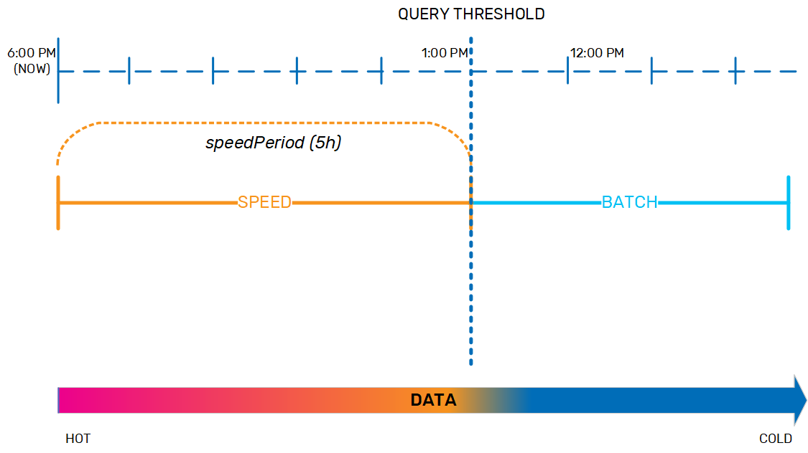

Big data adoption in enterprises is increasing all the time, with no sign of stopping. The Apache Spark MLlib and Tensorflow are among the most-adopted big data analytics platforms, while Cloudera, Amazon EMR, Hortonworks, and MapR are popular big data distributions. Patching all these technologies together into the classic Lambda architecture presents a number of customer challenges.
AnalyticsXtreme is a data lake accelerator that operationalizes your data lake for real-time analytics, which can run simultaneously on both real-time, mutable streaming data and on historical data that is stored on data lakes based on Hadoop, Amazon S3 or Azure Blob Storage, as well as data warehouses such as Snowflake, without requiring a separate data load procedure or data duplication. Moving from on-premise to the cloud, or changing technology stacks for example from Cloudera to Amazon S3, is seamless to machine learning applications; increasing flexibility while reducing development and maintenance.
With AnalyticsXtreme, your data is available for immediate searching, queries, and running analytics; there is a single logical view for hot, warm and cold data. The hot data resides on
This approach enables fast access to frequently used historical data, and applications can access any data - hot, warm, or cold - via a unified layer using Spark SQL or JDBC. You can easily integrate BI tools such as Tableau, Looker, and PowerBI.
AnalyticsXtreme provides automatic life cycle management, handling the underlying data movement, optimization and deletion using an internal data life cycle policy.
One of the main functions of AnalyticsXtreme is managing the movement of data from the speed layer (data grid) to the batch layer (external data storage) as it ages and becomes cold. But in order to handle this data transfer transparently, several things must to be taken into consideration. For example, the business application may trigger a query on the data at any point in time, and so needs to know where the data is located in order to successfully complete the query and return accurate results. The query may be complex, and therefore may take a relatively long time to complete. Additionally, there may be remote clients sending their queries, which means network latency needs to be taken into account. And finally, if the network connection isn't stable, the latency period may be even longer for some queries before they are finally received and executed.
The data life cycle policy was designed to handle this movement of data from the speed layer to the batch layer in a safe and predictable way. For example, we may have a system where data that is up to 5 hours old is considered hot and should be held in the speed layer, while anything older is considered cold and therefore must be moved to the batch layer. This 5-hour interval is the speedPeriod . The end of the speedPeriod is the query threshold; if a query is sent at 6 PM that requires data up to 5 hours old, the query threshold is 1 PM, and the query manager will look for the data in the speed layer. If the query needs data that is more than 5 hours old, the query manager will look for that data in the batch layer.

While the data is in the speed layer, it is dynamic and can be updated as necessary. When it is moved to the batch layer, it becomes immutable. As the data nears the end of the speedPeriod, the data life cycle policy has to prepare for moving it to the batch layer. Therefore, the policy includes a mutabilityPeriod, during which time the data remains fully dynamic. When the data ages out of the mutabilityPeriod, it becomes immutable so that it is ready to be moved to the batch layer. By default, the mutabilityPeriod is set to 80% of the speedPeriod. If the speedPeriod is 5 hours, then the mutabilityPeriod is 4 hours, and data that is between 4-5 hours old is in an immutable window.

In order to keep system performance consistent, and to ensure that the data can be easily verified when it is moved between layers, the data life cycle policy copies the data from the speed layer to the batch layer in small chunks as it nears the end of the immutable window, according to the batchFeedInterval. At this point, the aging data exists both in the speed layer and in the batch layer.

After the aging data has been copied safely to the batch layer and the speedPeriod expires, the data needs to be evicted from the speed layer. However, since the query threshold is a sliding window, a small safety margin is needed to ensure that long-running queries can complete, and to account for network latency regarding remote clients that may have sent queries before the speedPeriod for that data expired. This safety margin is the evictionBuffer, set by default to 10 minutes.

The data life cycle policy defines how data is archived from the data grid (speed layer) to the external data storage (batch layer). This policy is defined in the Space, with a global configuration that defines the polling interval and log level for the application itself, along with a life cycle policy for each data object, or table.
The global configuration contains a list of DataLifecyclePolicy properties, as well as the logging level that is set for the entire application:
| Parameter | Description | Unit | Default Value | Required/Optional |
|---|---|---|---|---|
| verbose | Increases the log levels for both the client and the server to provide verbose information (useful for troubleshooting). | True/False | False | Optional |
The DataLifecyclePolicy table contains the following parameters.
| Parameter | Description | Unit | Default Value | Required/Optional |
|---|---|---|---|---|
| typeName * | Name of the table/type/class to which this policy applies. | Required | ||
| timeColumn** | Name of column/property/field that contains the time data used to manage this policy. | Required | ||
| timeFormat | Time format for the data in the timeColumn parameter. | by java | Optional | |
| speedPeriod | Time period or fixed timestamp. | Required | ||
| batchDataSource | endpoint for querying the batch layer | Required | ||
| batchDataTarget | endpoint for feeding data to the batch layer | Required | ||
| mutabilityPeriod | Period of time during which data can be updated. | Duration in minutes (m) or % of speedPeriod. | 80% | Optional |
| batchFeedInterval | Data is fed from the Space (speed layer) to the batch layer in these time-based intervals at the end of the speedPeriod, after the mutabilityPeriod has expired. | Minutes (m) | 1 m | Optional |
| batchFeedSize | Maximum data entries per batch feed interval. |
1000 |
Optional | |
| evictionPollingInterval | Polling interval for querying and evicting each policy. | Minutes (m) | 1 m | Optional |
| evictionBuffer | Additional waiting period before evicting data from the Space (speed layer) after it was fed to the batch layer, so that long queries and clock differences won't cause errors or generate exceptions. | Duration in minutes (m) or % of speedPeriod. | 10 m | Optional |
* This correlates to an object or JSON in the object store.
** This correlates to a property or entity in an object or JSON.
You can configure the following properties for the data life cycle policy:
AnalyticsXtreme supports all the data formats that are supported by Apache Spark, such as Apache Parquet and Apache Avro.
(Get from Niv)
TBD
Gaps: Join (Ayelet)
TBD